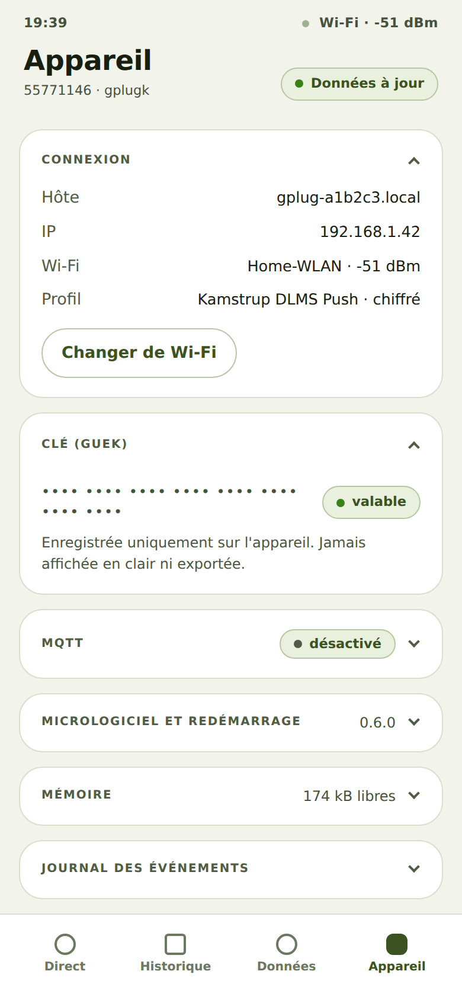

Consulter l'adresse et la connexion du gPlug
De quoi il s'agit
En tant que propriétaire d'un gPlug, je veux consulter l'adresse à laquelle il est joignable et la qualité de sa réception Wi-Fi, afin de le retrouver et de lui choisir un bon emplacement.
Comment faire
- Touchez Appareil en bas. La carte Connexion est ouverte.
- Elle affiche Hôte (l'adresse en
.local), IP, le Wi-Fi avec la force du signal et le Profil choisi.
Onglet Appareil avec connexion et clé
Comment savoir que cela a fonctionné
- L'adresse affichée ouvre aussi l'application sur un autre appareil du même Wi-Fi.
Remarques
- La force du signal est indiquée en dBm : −50 est très bon, en dessous de −80 la connexion devient peu fiable.
- Chaque carte de l'onglet Appareil s'ouvre et se ferme d'un appui sur son titre ; le navigateur s'en souvient.
Vérifié avec le simulateur d'appareil le 30 septembre 2026.